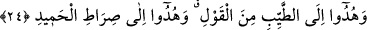

meşârık’da belirtildiği gibi esah olan bu ruhsatın sefer hâline mahsûs olmamasıdır.
24. Ve onlar, sözün en güzeline yöneltilmişler, övgüye lâyık olan Allah’ın yoluna
iletilmişlerdir.
“Ve onlar, sözün en güzeline yöneltilmişler,” Mü’minlere pak olan sözle yol
gösterilmiştir. Yani, onlara âhirette temiz sözlerle yol gösterirler. Bu şöyle olur: Onlar
cenneti gördüklerinde, “Hidayetiyle bizi (bu nimete) kavuşturan Allah’a
hamdolsun!” (el-A’râf, 7/43) derler. Cennete girdiklerinde: “Bizden tasayı gideren
Allah’a hamdolsun.” (Fâtır, 35/34) sözü dökülür dillerinden. Menzillerine
yerleştiklerinde de, “Bize verdiği sözde sadık olan ve dilediğimiz yerinde
oturacağımız bu cennet yurduna bizi vâris kılan Allah’a hamdolsun.” (ez-Zümer,
39/74) derler. Müfessirlerin çoğunluğu, onların dünyada iken söyledikleri “Lâilâhe
illallâh Muhammedun rasûlullâh” kelime-i tayyibesi sebebiyle (cennete) girdikleri
görüşündedir. Nitekim et-Te’vîlâtü’n-Necmiyye’de şöyle der: “Sözün en güzeline
yöneltilmek, ‘Lâ ilâhe illallah’ sözünü söylemekte; onunla amelde ihlâs ve
samimiyettir.” Baklî Hakâik’ında şöyle der: “Bu; zikir, iyiliği emretmek, müslümanlara
nasîhat ya da mü’minlere duâ ve sâlikleri irşaddır.” Kâşifî Keşfü’l-esrâr’dan naklen
şöyle der: Temiz/pâk söz, (benlik) dâvâsından arınmış, kibirden uzak, niyaz ve tazarrûya
yakın olan sözdür. Sehl Tüsterî (r.h.) şöyle demiştir: “Bu kelâma baktım, Hakk’a
niyazdan daha yakın bir yol görmedim; dâvâdan (benlikten) daha çetin bir güçlük de
bulmadım.”
Bu niyaz yolu, emniyet ve âsâyiş ile mâmûrdur
Hakk’a naz etmeyi bırak, bu yola gir de Allâh’a git
Git, dâvâyı (benliği) terk ederek halkı Hakk’a dâvet et
Kibir ve gururla Hak yolunu arama
Onlar, kendisi ya da âkıbeti “övgüye lâyık olan Allah’ın yoluna iletilmişlerdir.”
Onların sonunda varacakları yer ise cennettir. Fâsılaları gözetmek için
hidâyet/iletilmenin açıklanması, te’hir edilmiştir. Kâşifî der ki: “Îmân ehli, Allah’a
giden yolu İslâm dini ile buldular.” Yâni bu durumda mânâ, ‘Fiillerinde övgüye lâyık
olan Allah’ın dini’ demek olur. et-Te’vîlâtü’n-Necmiyye’de de şöyle der: “O, Allah’a
giden yoldur. Çünkü el-Hamîd, Allah Teâlâ’dır.”
Bilesin ki, doğru yola hidâyetin/iletilmenin alâmeti, sâlih amel ile ayağını yola
koymaktır. Sâlih amel, samîmî ve sırf Allah için olan ameldir. Sâdece îman, mü’mini
cehennemde ebedî kalmaktan alıkoysa ve cennete girmesini sağlasa da; amel, îman